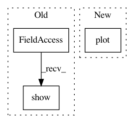

9c733bbefc5d05195370b04c7c952ee0fcee5e1b,tutorials/plot_4-SpectralAnalysis.py,,,#,30
Before Change
plt.legend()
plt.xlabel("Frequency (Hz)")
plt.ylabel("Power (V^2/Hz)")
plt.show()
//////////////////////////////////////////////////////////////////////////////////////////////////////////////////////////////////////////////////////////////////////////////////////////////////////
// Aside: Fitting 1/f and oscillations in power spectra
// ----------------------------------------------------
After Change
sig = data["x"]
fs = data["fs"]
times = np.arange(len(sig))/fs
plt.plot(times, sig)
plt.xlim((0, 3))
plt.xlabel("Time (s)")
plt.ylabel("Voltage")
In pattern: SUPERPATTERN
Frequency: 5
Non-data size: 3
Instances
Project Name: neurodsp-tools/neurodsp
Commit Name: 9c733bbefc5d05195370b04c7c952ee0fcee5e1b
Time: 2019-02-14
Author: tdonoghue@ucsd.edu
File Name: tutorials/plot_4-SpectralAnalysis.py
Class Name:
Method Name:
Project Name: tyarkoni/pliers
Commit Name: 08800dc5da446e81952534090da2419c82a6bc13
Time: 2016-10-16
Author: quinten.mcnamara@gmail.com
File Name: featurex/diagnostics/__init__.py
Class Name: Diagnostics
Method Name: show
Project Name: mne-tools/mne-python
Commit Name: 0706ad95fa091003f29bd1d568a17324453bb297
Time: 2018-09-15
Author: jasmainak@users.noreply.github.com
File Name: examples/inverse/plot_lcmv_beamformer_volume.py
Class Name:
Method Name:
Project Name: autoreject/autoreject
Commit Name: beeddd09c5550a13447104d282f2dbc756620e52
Time: 2018-05-05
Author: denis.engemann@gmail.com
File Name: examples/plot_auto_repair.py
Class Name:
Method Name:
Project Name: arraiy/torchgeometry
Commit Name: fb0566fae5e074d15bca1212f61610fdef1535f3
Time: 2019-08-22
Author: ducha.aiki@gmail.com
File Name: kornia/feature/laf.py
Class Name:
Method Name: visualize_LAF